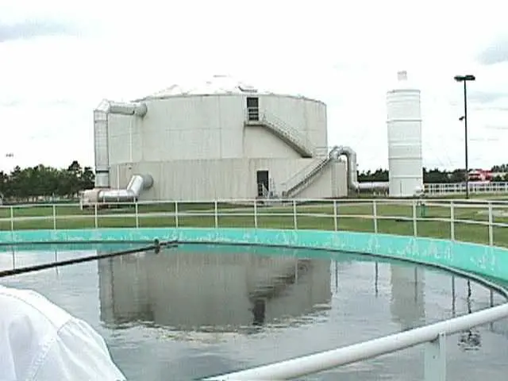
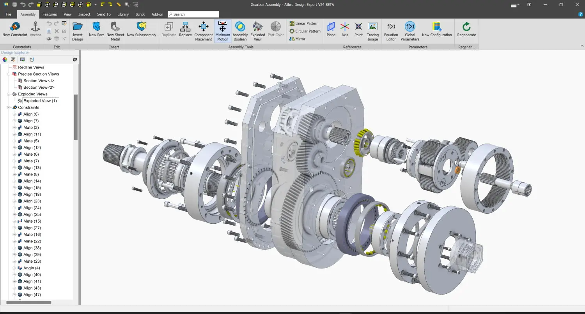

HVAC & MEP design
Cooling-load inputs, ventilation, equipment planning, duct routes and coordinated mechanical layouts.
- Load & airflow estimates
- Equipment schedules
- Services coordination
Independent engineering capability · Zambia
Mechanical design, technical drafting and engineering analysis for buildings, infrastructure and emerging industry.
HVAC & MEP
Water & sewer
Fuel systems
CAD & analysis
Representative HVAC image · MTA / CC BY 2.0
What we do
Mac Key Grip brings together system thinking, calculation, modelling and documentation—so the work is easier to review, communicate and develop.
Meet the engineer ↗Engineering capabilities
Focused technical support from early concept and calculation through coordinated CAD documentation.
Cooling-load inputs, ventilation, equipment planning, duct routes and coordinated mechanical layouts.
Fixture-led demand, storage and pumping concepts, distribution, drainage, venting and reticulation.
Concept arrangements for tanks, offloading, vent and fill lines, pump islands and dispensers.
2D documentation, 3D mechanical modelling, Excel dashboards and simulation-led technical studies.
Portfolio focus
Current imagery is representative of each discipline. Original project drawings and approved photography can replace it without changing the layout.
Building services

Representative image02Public health services
Fuel infrastructure
Decision support

Representative image05Mechanical design
Reference photographs illustrate capability areas and are not presented as completed Mac Key Grip commissions. View sources and licences.
Research & simulation
A final-year project modelling the flow of regional battery inputs and imported components into battery production and vehicle assembly in Chibombo.
How the work develops
Every scope is different. The working logic remains straightforward and easy to follow.
Define the site, constraints, information available and the deliverables required.
Establish loads, demands, capacities, routes and a defensible design basis.
Resolve the system against space, access, interfaces and other disciplines.
Prepare readable drawings, schedules and analysis for review and development.
Engineer profile
Founder / Mechanical Engineer
Mechanical design, system calculation and technical analysis focused on work that can be checked, coordinated and improved.
Working toolkit
Start a conversation
For a useful first discussion, share the project location, available drawings, required scope and expected deliverables.
Connect with Mac Key Grip
Choose the channel that works best for you.